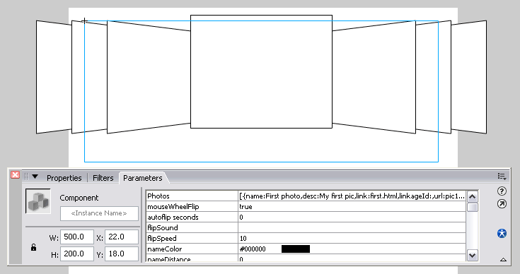
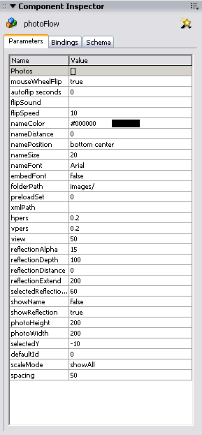
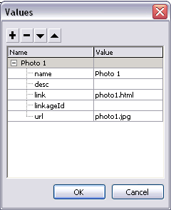

1. Having installed the photoFlow using the Adobe/Macromedia Extension Manager, open Flash, start a new file and save it.
2. (If you are not loading an external image, please skip this step and proceed with step 3.) Create a folder called images in the same location that you saved your file. Copy all of the images that you will be displaying through the photoFlow, to the images folder.
3. Press Ctrl+F7 (Win) or Cmnd+F7 (Mac) to open the Component panel. Open the photoFlow folder and drag a copy of the photoFlow component onto the stage.

4. Select the photoFlow component that's on the stage and press Alt+F7 to open the Component Inspector.

5. Enter the name of the folder containing the images (that you created in step #2), in the folderPath parameter. In this case, the folder name is images/
Note: It is very important to include a forward slash (/) at the end of the folder name.
6. Click on the Photos parameter to open the values panel, where you can enter the details of the images to load. Press the "+" button to add a new image. Enter the following details:
name: Name of image (optional).
desc: Description of image (optional).
link: Link variable of image. The use of this value is explained in detail in the events section (optional).
linkageId: This is the linkage identifier of the image, in the event that the image is located in the library.
url: The name and path of the image file to load (relative to the folderPath location).
Press the "+" button to add more images in the same manner.

7. Press Ctrl+Enter (win) or Cmnd+Enter (mac) to test your movie.
Note: In order for the movement to be smooth, it is recommended to set your movie speed to a minimum of 31fps.